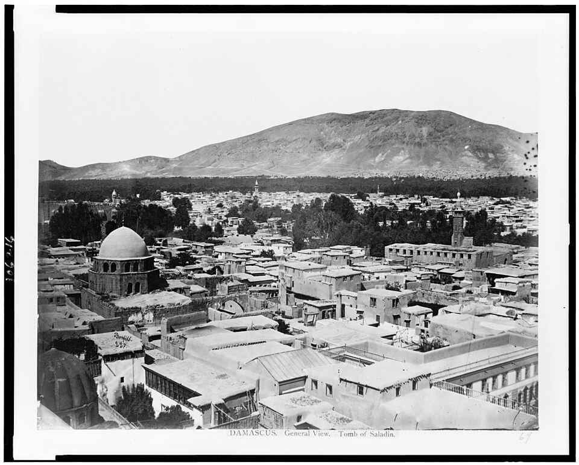
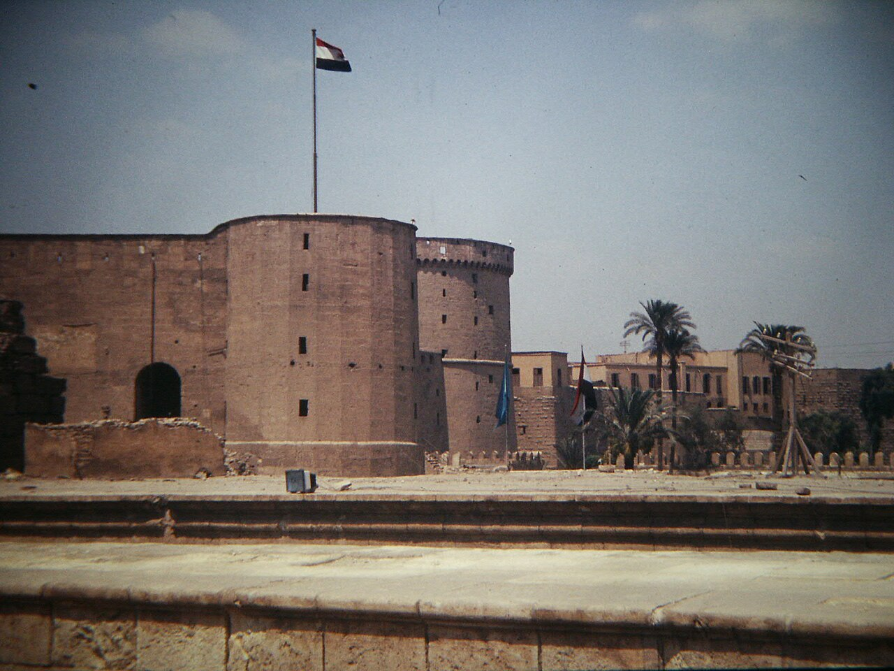
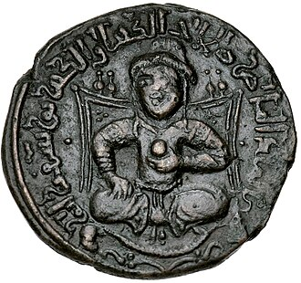

The three parts

PART A
Source Analysis
Two sources on Saladin — one written by a man who knew him, one written 800 years later — broken down by Origin, Purpose, Value and Limitation.
Flip the O·P·V·L cards →
PART B
Biography Poster
Background, achievements, a dated timeline from 1169 to 1193, and his impact — laid out as a poster with a fact file and a wall of period images.
Open the poster →
PART C
Source Evaluation
A close evaluation of Ibn Shaddād's account: how useful it is, where the bias sits, and why it should be read alongside other sources.
Read the evaluation →The two sources used throughout
PRIMARY SOURCE
Bahāʾ al-Dīn Ibn Shaddād
The Rare and Excellent History of Saladin
A Muslim scholar and judge who joined Saladin's circle and wrote from what he saw himself.
SECONDARY SOURCE
Jonathan Phillips
The Life and Legend of the Sultan Saladin
A historian of the Crusades writing in 2019, comparing Arabic, Western and Eastern Christian accounts.
Images used on this site



